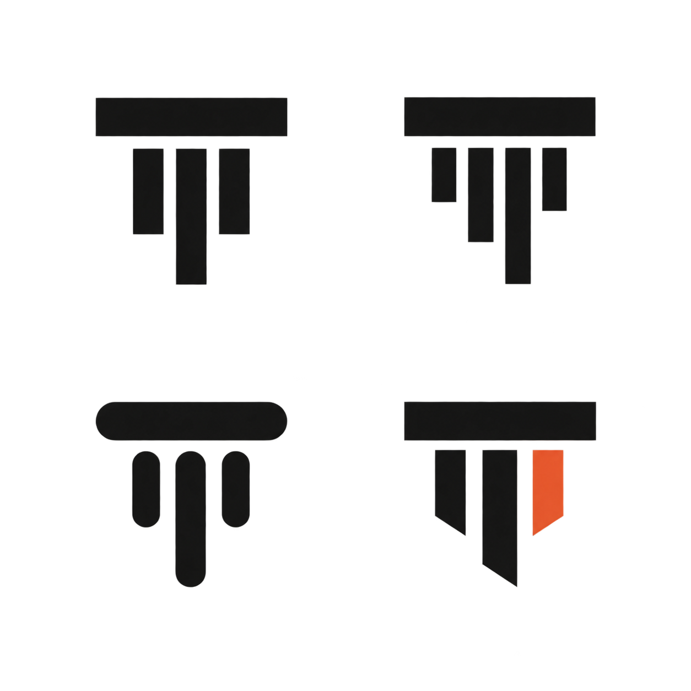
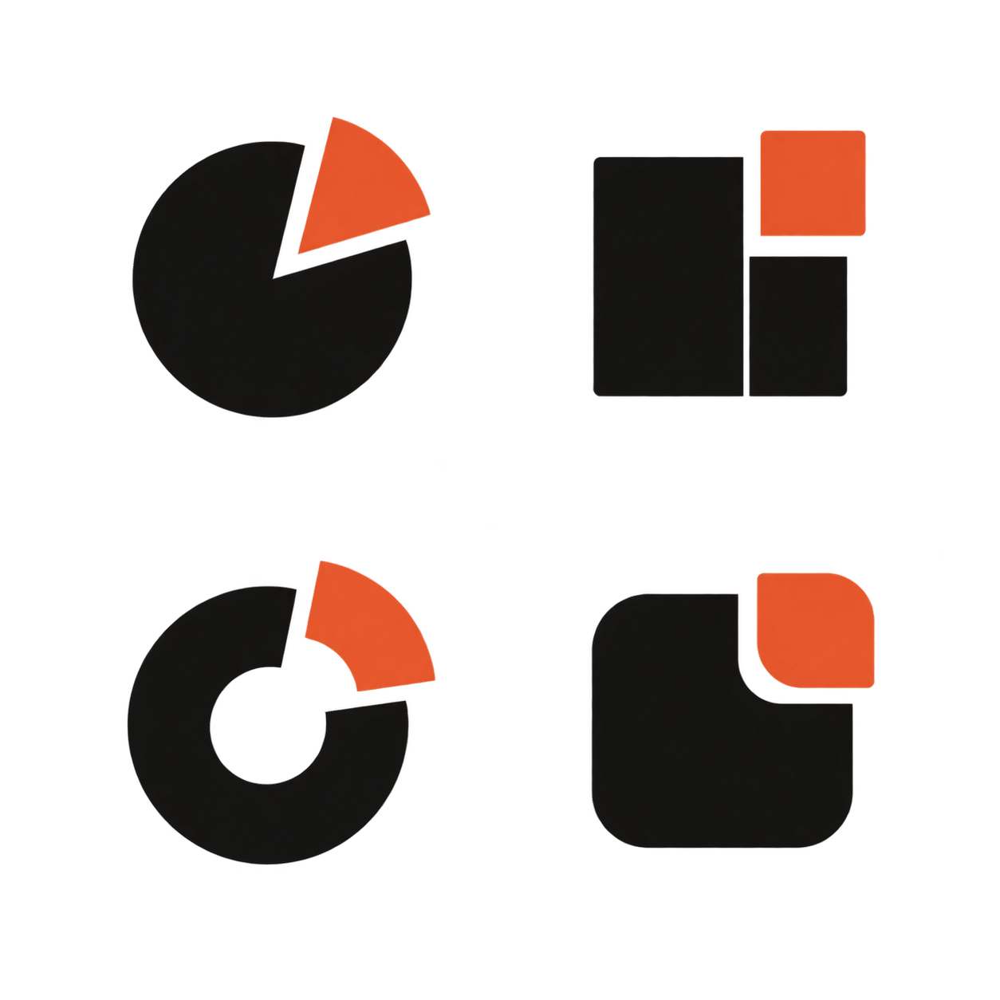
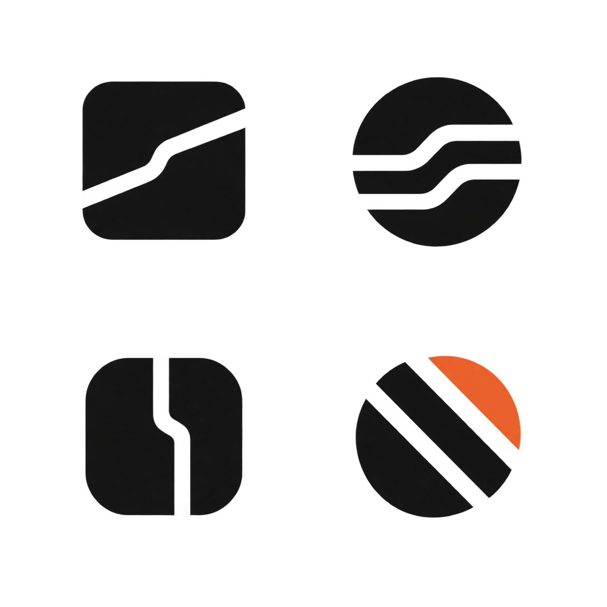
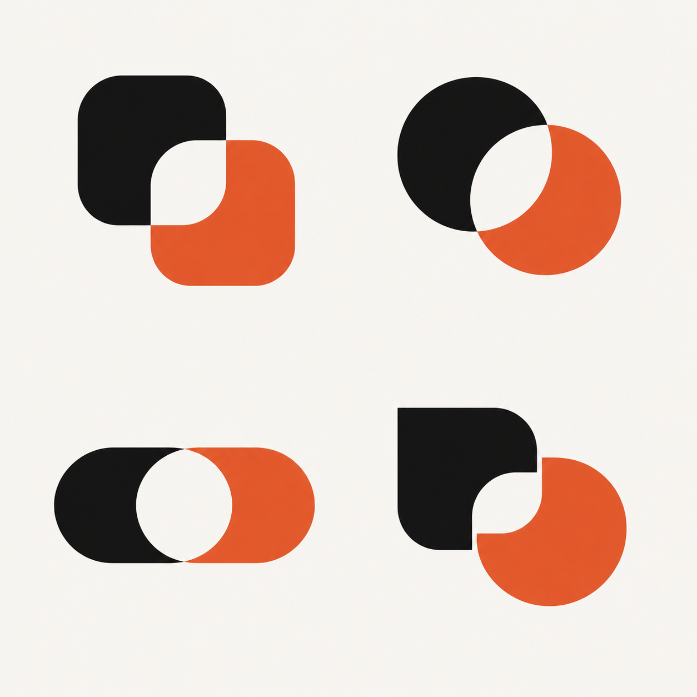
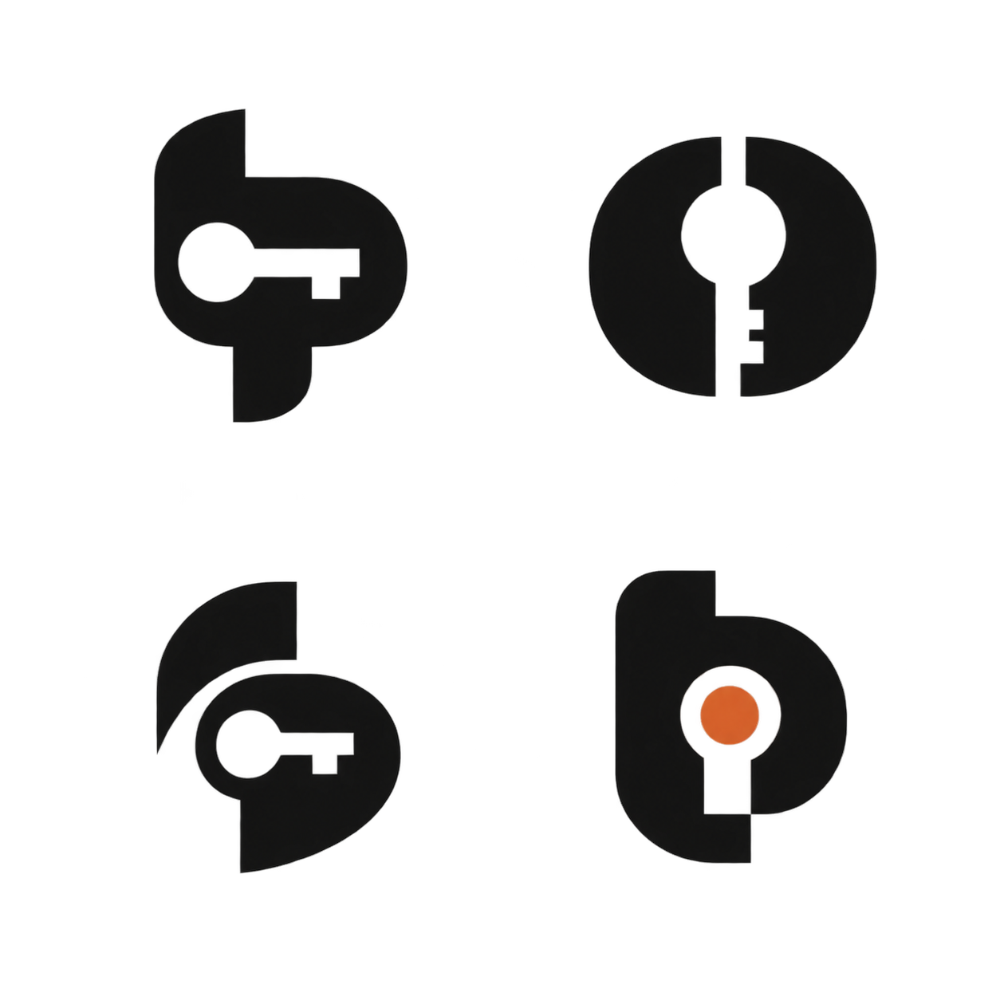
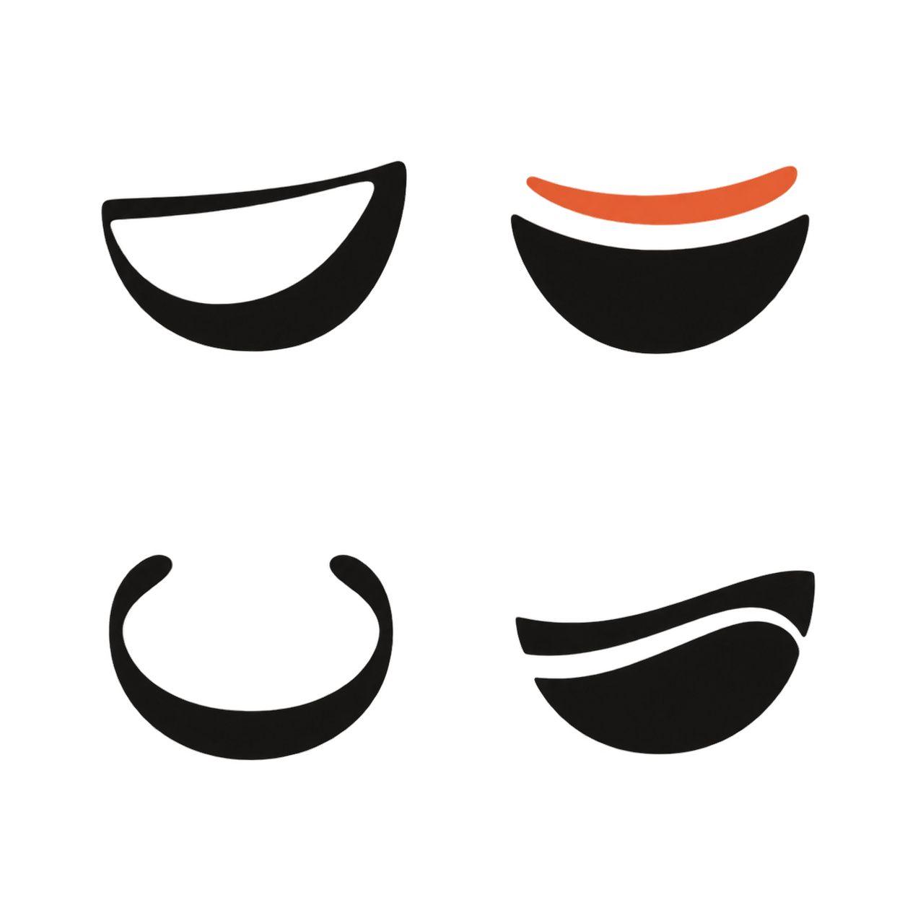

Teampot logo v4 · image-gen exploration (6 directions × 4)

1 · Split TOne company bar, teams as independent stems.

2 · Free partOne piece of the whole moves on its own.

3 · LanesOne company, each team in its own lane.

4 · OverlapCompany and team share the middle.

5 · Hidden keyA t/p with a key in its negative space.

6 · One gestureThe pot as a single stroke.